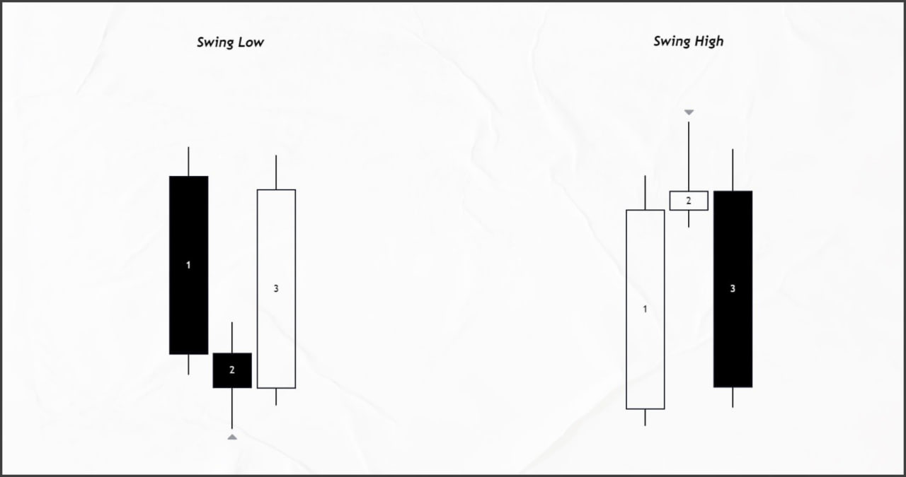
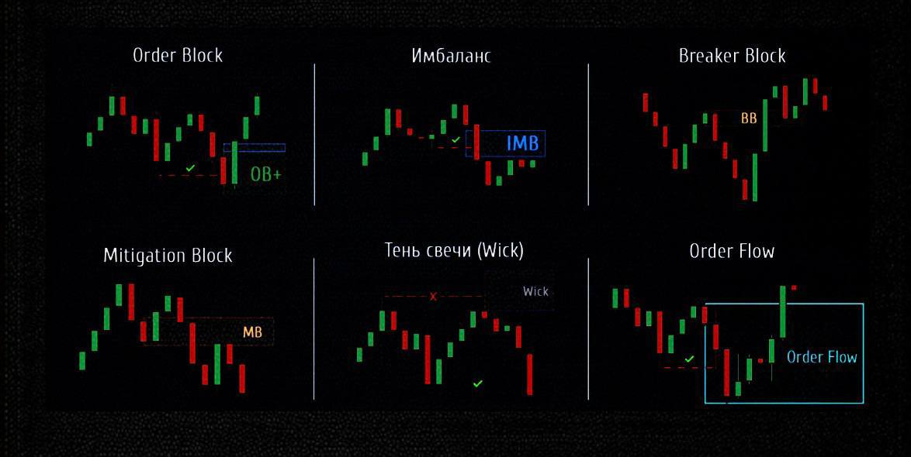
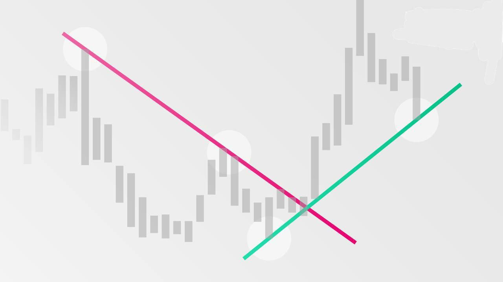
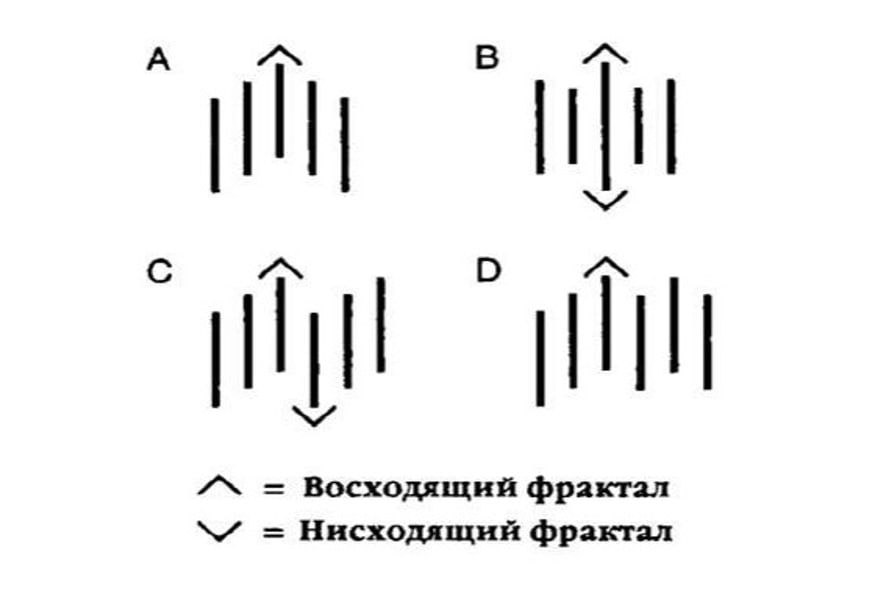
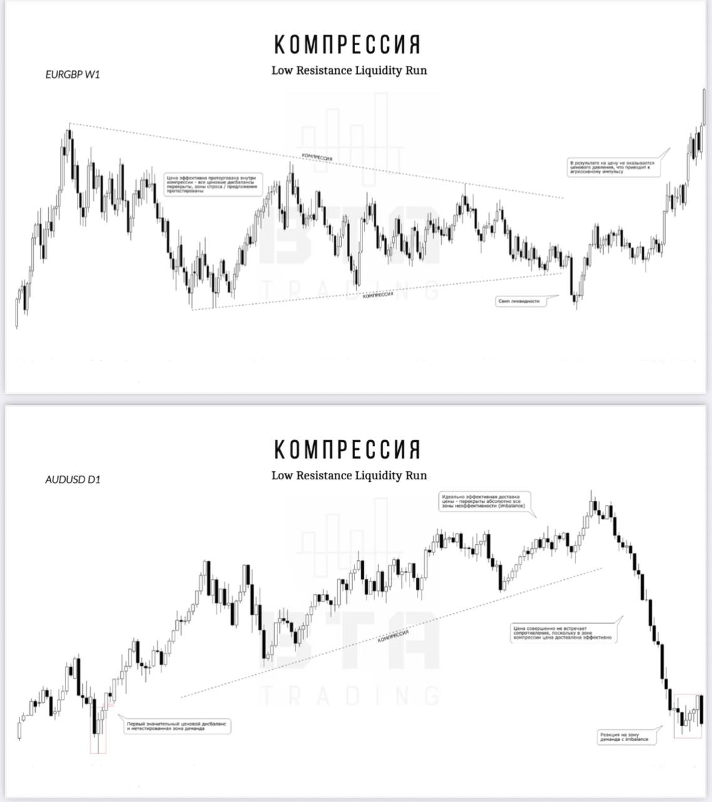
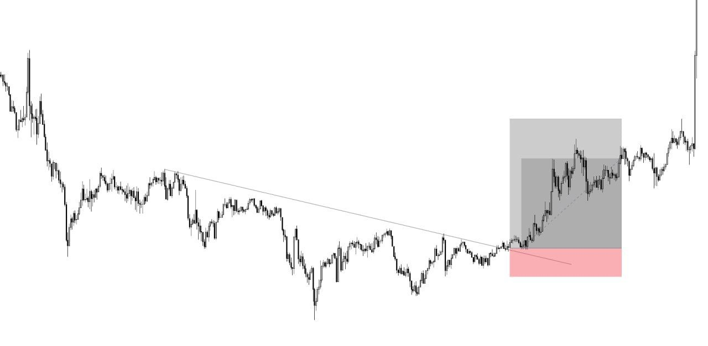

Аналитика
Как открыть первую сделку
Базовый алгоритм
Определите тренд
Работа начинается с анализа структуры — максимумов и минимумов.
Нисходящий тренд — ниже предыдущие максимумы
Найдите точку входа
Нужен сигнал: паттерн, зона интереса, подтверждение.
Не входи на эмоциях
Задайте риск и цель
Stop Loss и Take Profit обязательны.
Риск 1 → прибыль 3
Определение структуры
Что это?
Определение общего направления рынка.
Как это работает?
Сначала определите структуру и зоны ликвидности. Уточните, где находится цена и куда она скорее всего пойдет.
Применение
Найдите зоны интереса (POI). В зонах POI ищите подтверждение для входа.
Ключевой элемент: Swing Highs / Swing Lows
- Swing High: Три свечи, где центральная имеет наивысший максимум, а соседние — ниже.
- Swing Low: Три свечи, где центральная имеет самый низкий минимум, а соседние — выше.
Подтверждение (POI)
- Смена структуры на младшем таймфрейме, указывающая на валидность POI.
- Чтобы подтвердить, что зона интереса является ключевой точкой для входа.

Point of Interest (POI)
Что это?
POI — это участок, где можно ожидать важных изменений в цене. Это область, в которой рынок может показать определенные реакции.
Почему это важно?
Здесь значительные рыночные игроки сосредотачивают свои активы и стремятся защищать этот регион.
Два основных вида POI:
- Зоны высокой ликвидности
- Районы с манипуляциями ценой (большой объем заявок, блоки ордеров)

Линии тренда
Что это?
Диагональные линии на графиках, соединяющие ключевые точки данных для предвидения будущих движений цен.
Виды линий тренда
- Восходящие — от нижней точки к более высокой. Каждое последующее основание свечи выше предыдущего.
- Нисходящие — от верхней точки к нижней. Каждый последующий максимум свечи ниже предыдущего.
Линии тренда служат диагональными уровнями поддержки и сопротивления. Наклон указывает на силу тренда: чем круче, тем сильнее.

Что такое фрактал?
Фрактал — ценовая формация, указывающая на локальный разворот рынка. Состоит из 5 свечей.
⏬ Медвежий фрактал
- Средняя свеча — максимум
- Две свечи до и две после — с более низкими хайами
⏫ Бычий фрактал
- Средняя свеча — минимум
- Две свечи до и две после — с более высокими лоу

Компрессия (LRLR)
Что это?
LRLR (Low Resistance Liquidity Run) — метод эффективной доставки цены, оставляющий свежую ликвидность за хаями/лоями.
Главная особенность
Выполняет mitigation зон спроса и предложения и перекрывает ценовые дисбалансы (полностью или более чем на 50%).
Идея компрессии
Эффективно доставленная цена не требует mitigation зон спроса и предложения. Зона компрессии создает наименьшее сопротивление для цены.

Стратегия для новичков
Как это работает?
Находите на графике нисходящую или восходящую структуру. 🔥
Следующий шаг
Проведите трендовую линию. 👀
Вход в сделку
При пробое трендовой линии — открывайте позицию в сторону пробоя. 🚀

Дополнительные материалы
Ключевые концепции из уроков
Ликвидность
Способность актива быстро преобразовываться в деньги без влияния на цену. Умные деньги ищут ликвидность для исполнения крупных ордеров. Основной источник — стоп-лоссы розничных трейдеров.
BSL — ликвидность на покупку (над максимумами)
Имбаланс (Fair Value Gap)
Ценовой разрыв из-за дисбаланса спроса и предложения. Рынок стремится заполнить его. Бычий имбаланс (BISI) — для лонга, медвежий (SIBI) — для шорта.
FF — 100% имбаланса
Order Block
Свеча, показывающая покупки или продажи умного капитала. Зона поддержки или сопротивления. Цена стремится протестировать OB перед переоценкой актива.
Breaker Block
Ордер Блок, который был пробит и стал противоположной зоной. После пробоя становится зоной поддержки (для бычьего) или сопротивления (для медвежьего).
Mitigation Block
Зона, где цена возвращается для теста перед продолжением движения. Используется как модель продолжения тренда или разворота.
Тень свечи (Wick)
Длинная тень указывает на активную торговлю умных денег. Визуально отображает Ордер Блок на старшем таймфрейме. Зона интереса для разворота.
Японские свечи
Метод отображения ценовых изменений. Бычья свеча — закрытие выше открытия. Медвежья — закрытие ниже открытия. Поглощение — сильный сигнал разворота.
Гэп (Gap)
Ценовой разрыв между закрытием и открытием свечей. Указывает на неэффективную доставку цены. Выступает магнитом и зоной поддержки/сопротивления.
Профиль объема (Volume Profile)
Индикатор, показывающий горизонтальные уровни торговой активности. POC (Point of Control) — уровень с наибольшим объемом, где происходит набор позиций крупными игроками.
Ставка финансирования
Периодический платеж за удержание позиции на фьючерсном рынке. Положительная ставка — лонг платят шорту. Отрицательная — шорт платят лонгу.
Криптовалютные индексы
TOTAL — кап всех криптовалют. TOTAL2 — без BTC. BTC.D — доминация Биткоина. Показывают переток капитала между активами.
Сезонные тенденции
Модели, основанные на исторических данных. Показывают, как цены изменяются в определенное время года. Используются для прогнозирования ключевых пиков и разворотов.